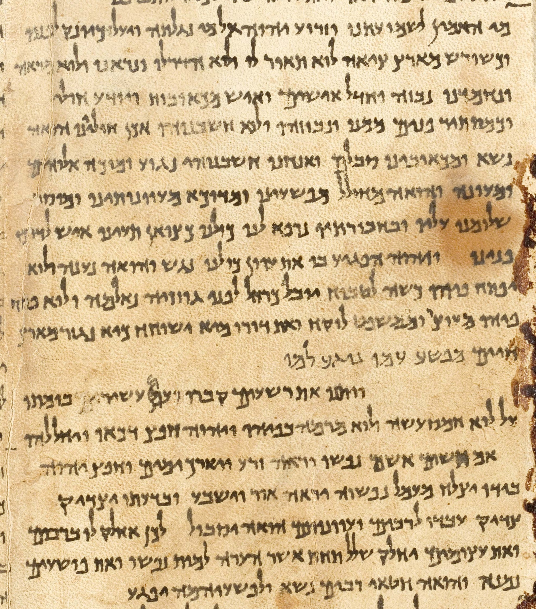
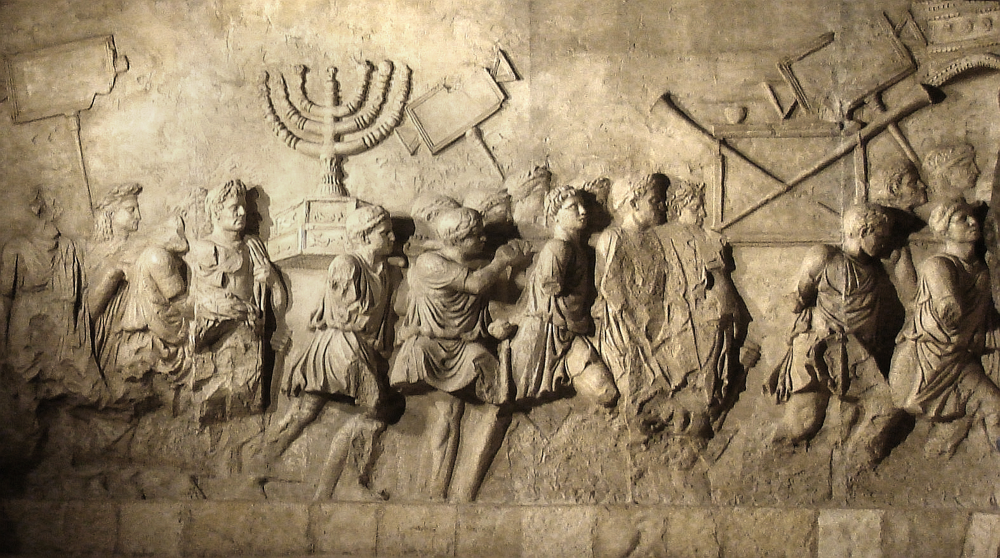

1. Εισαγωγή: Η Πνευματική Μήτρα της Δυτικής Συνείδησης
Στο έβδομο μάθημα, η Μαρία Ευθυμίου αναλύει τη συγκλονιστική ιστορική γέφυρα ανάμεσα στον αρχαίο Εβραϊσμό και τη γέννηση του Χριστιανισμού. Πρόκειται για την πιο επιδραστική πνευματική μεταμόρφωση στη μεσογειακή λεκάνη: το πώς μια μικρή φυλετική κοινότητα της Χαναάν κατέληξε να γεννήσει μια οικουμενική θρησκεία που ανέτρεψε τα ηθικά και πολιτικά θεμέλια της Ρωμαϊκής Αυτοκρατορίας.
2. Ο Προφητικός Ιουδαϊσμός: Δικαιοσύνη Υπεράνω Θυσιών
Η μοναδικότητα του αρχαίου Ισραήλ δεν κρύβεται στους ναούς του, αλλά στη φωνή των Προφητών του (8ος–6ος αι. π.Χ.). Σε ολόκληρο τον αρχαίο κόσμο —από τη Μεσοποταμία και την Αίγυπτο μέχρι την αρχαϊκή Ελλάδα— η σχέση με τους θεούς ήταν καθαρά συναλλακτική: «do ut des» (δίνω για να μου δώσεις). Έσφαζες ένα βόδι, έκαιγες το λίπος στο θυσιαστήριο, και ο θεός σού χάριζε νίκη στη μάχη ή βροχή στα χωράφια.
Ξαφνικά, μέσα από τις άνυδρες πεδιάδες της Ιουδαίας, ορθώνονται άνδρες όπως ο Αμώς, ο Ωσηέ, ο Ησαΐας και ο Ιερεμίας, οι οποίοι διακηρύσσουν κάτι ανήκουστο για την αρχαιότητα: Ο Θεός δεν θέλει καμένα κρέατα!
3. Η Βαβυλώνια Αιχμαλωσία (586 π.Χ.) & τα Χειρόγραφα της Νεκράς Θάλασσας
Το 586 π.Χ., ο βασιλιάς της Βαβυλώνας Ναβουχοδονόσορ κατέλαβε την Ιερουσαλήμ, έκαψε τον Πρώτο Ναό του Σολομώντα και εξόρισε την ιουδαϊκή ελίτ στη Μεσοποταμία. Ήταν μια εθνική καταστροφή που όμως γέννησε τον Βιβλικό Ιουδαϊσμό:
- Η πίστη αποδεσμεύτηκε από έναν γεωγραφικό τόπο: ο Θεός είναι πανταχού παρών.
- Ιδρύθηκε η Συναγωγή ως χώρος ανάγνωσης και ερμηνείας των κειμένων.
- Συντάχθηκε και κωδικοποιήθηκε η Εβραϊκή Βίβλος (Τανάκ).
Την ίδια αγωνία για την αγνότητα του κειμένου διατήρησε η ασκητική αδελφότητα των Εσσαίων στο Κουμράν. Το 1947, ένας νεαρός Βεδουίνος βοσκός αναζητώντας μια χαμένη κατσίκα πέταξε μια πέτρα σε μια απόκρημνη σπηλιά πάνω από τη Νεκρά Θάλασσα και άκουσε πήλινα πιθάρια να σπάνε. Μέσα τους βρέθηκαν τα ιστορικά Χειρόγραφα της Νεκράς Θάλασσας, άθικτα επί 2.000 χρόνια χάρη στο ξηρό κλίμα της ερήμου!

4. Ελληνιστικός Ιουδαϊσμός, ο Πομπήιος & η Ρωμαϊκή Κατάκτηση
Το 63 π.Χ., ο Ρωμαίος στρατηγός Πομπήιος κατέλαβε την Ιερουσαλήμ. Περίεργος να δει ποιον θεό λάτρευαν οι Ιουδαίοι, μπήκε στα άδυτα των Αγίων των Αγίων (*Kodesh Hakodashim*). Προς έκπληξή του, αντίκρισε ένα εντελώς άδειο δωμάτιο, χωρίς κανένα είδωλο ή άγαλμα — κάτι αδιανόητο για την πολυθεϊστική ρωμαϊκή σκέψη.
Τον 1ο αιώνα π.Χ., η υποταγή της Ιουδαίας στη Ρώμη δημιούργησε ένα εκρηκτικό περιβάλλον. Οι Σαδδουκαίοι συνεργάζονταν με τη ρωμαϊκή εξουσία, οι Φαρισαίοι προσκολλώνταν στις λεπτομέρειες του Νόμου, οι Εσσαίοι αποσύρονταν στην έρημο αναμένοντας την Ημέρα της Κρίσεως, και οι Ζηλωτές οργάνωναν ένοπλο αντάρτικο. Όλοι περίμεναν τον Μεσσία.
5. Ο Ιστορικός Ιησούς: Το Ριζοσπαστικό Μήνυμα της Αγάπης
Μέσα σε αυτό το καμίνι εμφανίστηκε ο Ιησούς από τη Ναζαρέτ. Το κήρυγμά του δεν ήταν ένα κάλεσμα σε ένοπλο πόλεμο, αλλά μια ριζοσπαστική ανατροπή όλων των κοινωνικών ιεραρχιών:

Ο Ιησούς συνέφαγε με τους περιθωριοποιημένους, θεράπευσε το Σάββατο διακηρύσσοντας ότι ο άνθρωπος είναι ανώτερος από τον νόμο, και στην Επί του Όρους Ομιλία μακάρισε όχι τους ισχυρούς και τους νικητές, αλλά τους πραείς, τους ελεήμονες και τους διωκόμενους.
6. Ο Παύλος από την Ταρσό & ο Άγνωστος Θεός των Αθηνών
Χωρίς τον Απόστολο Παύλο, ο Χριστιανισμός πιθανότατα θα είχε παραμείνει μια μικρή ιουδαϊκή αίρεση περιορισμένη στη Συροπαλαιστίνη. Ο Παύλος συνδύαζε τρεις ιδιότητες που τον καθιστούσαν μοναδικό:
- Ήταν Εβραίος Φαρισαίος με βαθιά γνώση των Γραφών.
- Μιλούσε άπταιστα την ελληνική γλώσσα και σκεφτόταν με τους όρους της ελληνιστικής ρητορικής.
- Κατείχε τη ρωμαϊκή υπηκοότητα, πράγμα που του εξασφάλιζε νομική προστασία και ελευθερία κινήσεων.
Στην Αποστολική Σύνοδο της Ιερουσαλήμ (48/49 μ.Χ.), ο Παύλος πέτυχε την ιστορική τομή: οι μη Εβραίοι (Εθνικοί) γίνονταν δεκτοί στην Εκκλησία χωρίς να υποχρεούνται να τηρούν την περιτομή και τους διατροφικούς νόμους του Μωυσή. Στην Αθήνα, μιλώντας στον Άρειο Πάγο, αξιοποίησε τον βωμό του «Αγνώστου Θεού» για να ενώσει τον μονοθεϊσμό με την ελληνική φιλοσοφία!
7. Ρωμαϊκός Πραγματισμός: Γιατί Διώχθηκαν οι Χριστιανοί; (Προδοσία, όχι Αίρεση)
Μια από τις μεγαλύτερες ιστορικές παρανοήσεις είναι ότι οι Ρωμαίοι δίωκαν τους χριστιανούς από θεολογικό φανατισμό. Στην πραγματικότητα, το ρωμαϊκό πάνθεον ήταν απόλυτα ανοιχτό και πραγματιστικό: οι Ρωμαίοι υιοθετούσαν με ενθουσιασμό ξένες λατρείες (την Ίσιδα από την Αίγυπτο, τον Μίθρα από την Περσία, τον Σέραπι). Η θρησκεία για το ρωμαϊκό κράτος δεν αφορούσε την εσωτερική πίστη της καρδιάς, αλλά το πολιτικό καθήκον και την τήρηση της Pax Deorum (της ειρήνης με τους θεούς που προστάτευαν την πόλη).
Μία φορά τον χρόνο, κάθε πολίτης ή υπήκοος όφειλε να προσέλθει στον βωμό του Αυτοκράτορα, να κάψει μια πρέζα θυμίαμα στα κάρβουνα και να λάβει το επίσημο πιστοποιητικό θυσίας (libellus) — μια πράξη αντίστοιχη με έναν σύγχρονο όρκο νομιμοφροσύνης στο Σύνταγμα ή την πληρωμή φόρων. Όταν οι χριστιανοί αρνούνταν να θυσιάσουν, οι Ρωμαίοι δικαστές δεν τους καταδίκαζαν για αίρεση (haeresis), αλλά για εσχάτη προδοσία (crimen majestatis) και ανυπακοή στους νόμους του κράτους!
8. Η Καταστροφή της Ιερουσαλήμ (70 μ.Χ.), η Μασάντα & η Διασπορά
Το 70 μ.Χ., μετά από μια αιματηρή τετραετή επανάσταση των Ιουδαίων, οι ρωμαϊκές λεγεώνες υπό τον Τίτο άλωσαν την Ιερουσαλήμ και **ισοπέδωσαν τον Δεύτερο Ναό**. Το 73 μ.Χ., οι τελευταίοι 960 Ζηλωτές στο απόκρημνο οχυρό της Μασάντα αυτοκτόνησαν μαζικά για να μην παραδοθούν στη ρωμαϊκή δουλεία. Μετά και την εξέγερση του Μπαρ Κοχμπά (132–135 μ.Χ.), ο αυτοκράτορας Αδριανός μετονόμασε την Ιερουσαλήμ σε Aelia Capitolina και την επαρχία σε Syria Palaestina, εγκαινιάζοντας τη μεγάλη Διασπορά.

Η πτώση της Ιερουσαλήμ αποτέλεσε το οριστικό ιστορικό διαζύγιο: Ο Ιουδαϊσμός αναδιοργανώθηκε γύρω από τους Ραββίνους και τη μελέτη της Τορά, ενώ ο Χριστιανισμός προχώρησε ανεξάρτητος στην κατάκτηση της ελληνορωμαϊκής οικουμένης.
9. Ετυμολογικό Εργαστήρι: Οι Λέξεις της Χριστιανικής Εξάπλωσης
- Ευαγγέλιο: Από το εὖ (καλός) + ἀγγελία (είδηση). Στη ρωμαϊκή πολιτική γλώσσα ήταν η επίσημη αναγγελία της γέννησης ή της στρατιωτικής νίκης του Καίσαρα. Οι χριστιανοί το επανανοηματοδότησαν ως το χαρμόσυνο μήνυμα της σωτηρίας.
- Χριστός: Ελληνική απόδοση της εβραϊκής λέξης Mashiach (Μεσσίας), από το ρήμα χρίω (αλείφω με ιερό μύρο). Σήμαινε τον «κεχρισμένο βασιλιά και ιερέα».
- ΙΧΘΥΣ: Το μυστικό ακρωνύμιο αναγνώρισης των διωκόμενων χριστιανών στις κατακόμβες: Ιησούς Χριστός Θεού Υιός Σωτήρ.
- Απόστολος: Από το ρήμα ἀποστέλλω (στέλνω ως επίσημο αντιπρόσωπο). Οι απόστολοι ήταν οι εξουσιοδοτημένοι πρεσβευτές της διδασκαλίας.
- Εκκλησία: Από το ἐκκαλέω (προσκαλώ, καλώ έξω). Στην αρχαία δημοκρατική Αθήνα ήταν η συνέλευση των πολιτών (Εκκλησία του Δήμου). Στον Χριστιανισμό έγινε η κοινότητα των πιστών που καλούνται να ζήσουν μαζί.